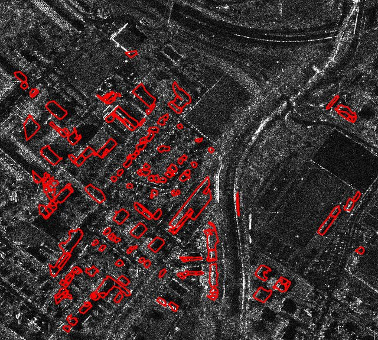
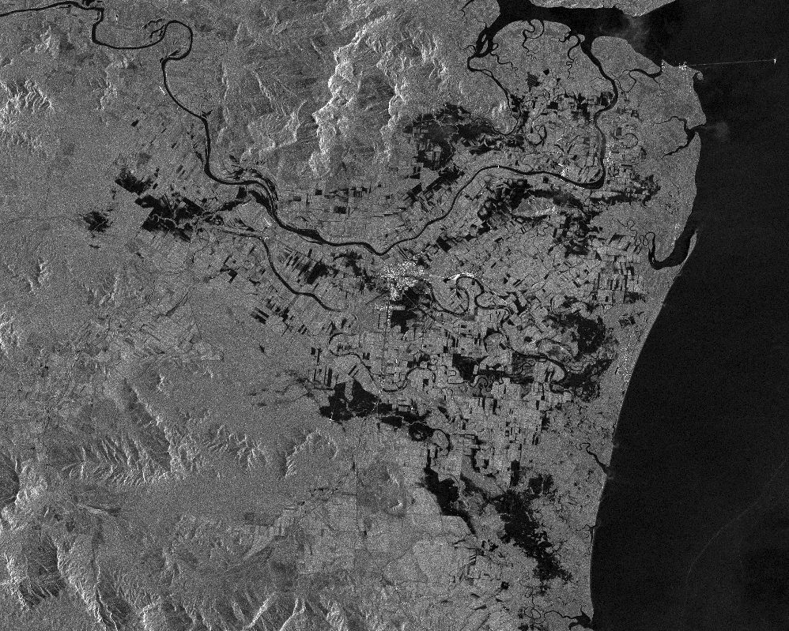
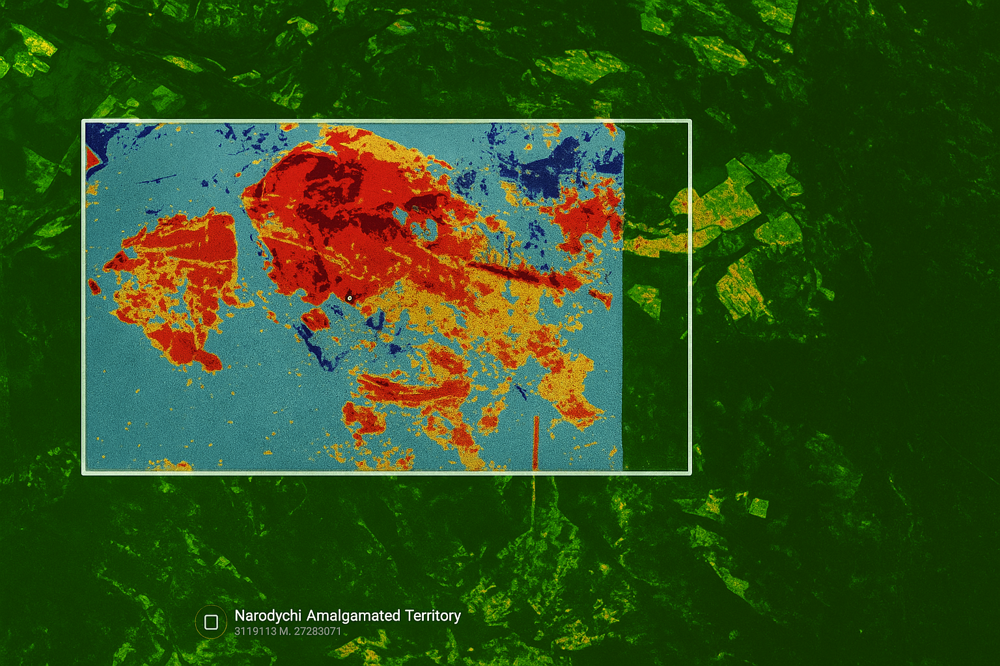
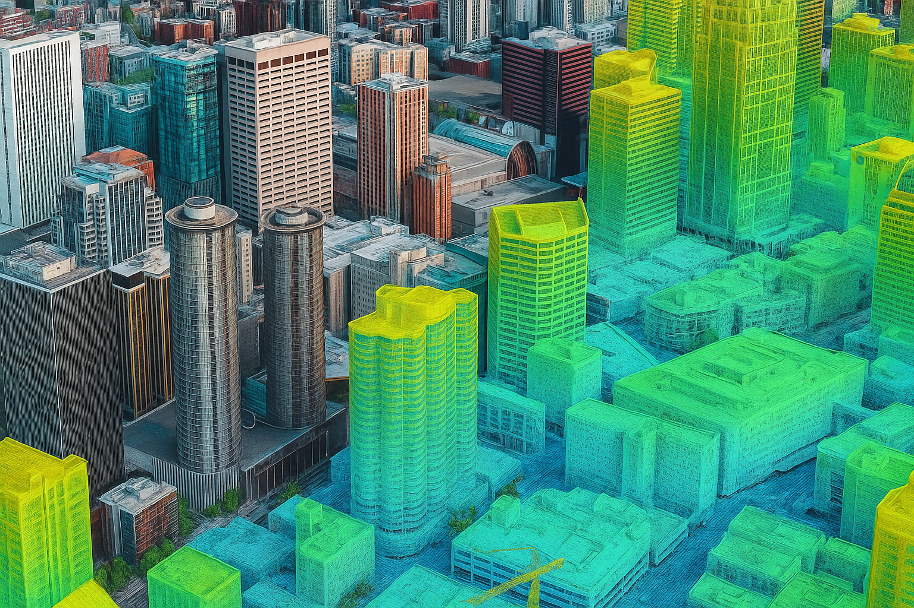
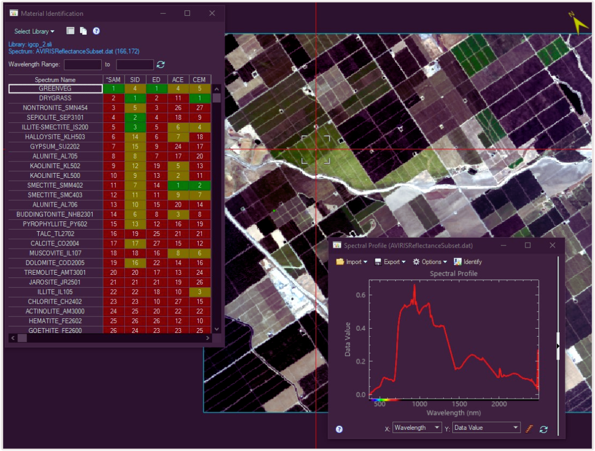

Building Detection in Rural Areas
Centroid-based patch extraction + UNet models on 25 cm orthophotos — high accuracy while reducing training time.

Sentinel-1 Flood Mapping
Refined Lee speckle filtering & thresholding for robust water detection during flood events.

Burn Area Detection with ENVI GSF
Automated ENVI GSF task to detect burn areas using pre/post imagery efficiently.

LiDAR Urban Mapping
High-resolution 3D mapping of urban areas for infrastructure planning and development.

SAR-Based Flood Monitoring
Real-time flood monitoring and analysis using Synthetic Aperture Radar technology.

Hyperspectral Vegetation Analysis
Assessing vegetation health and biodiversity using hyperspectral imaging techniques.